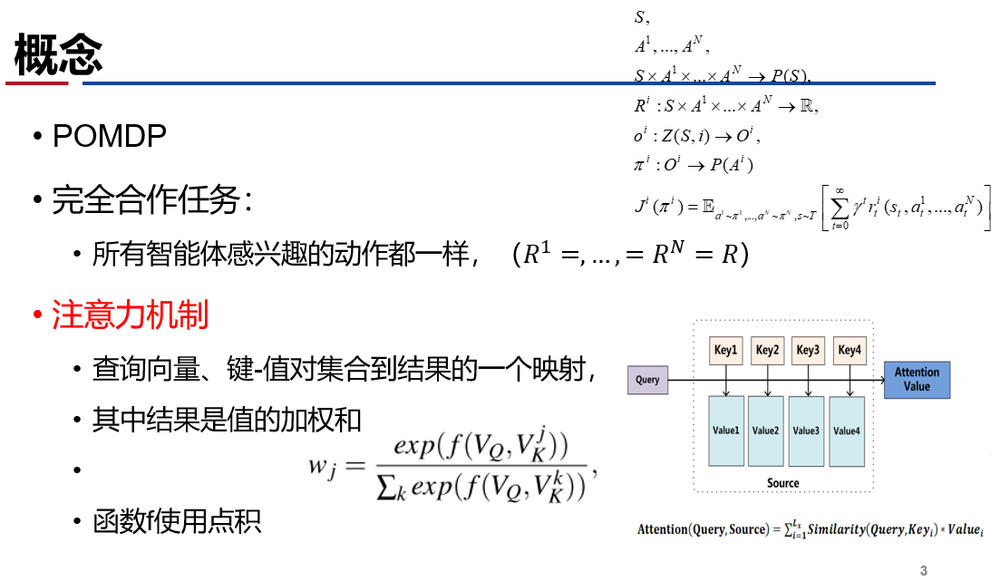
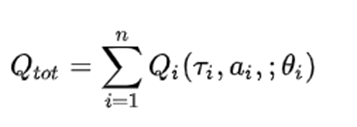
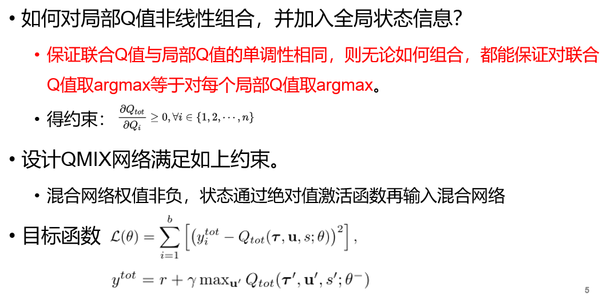
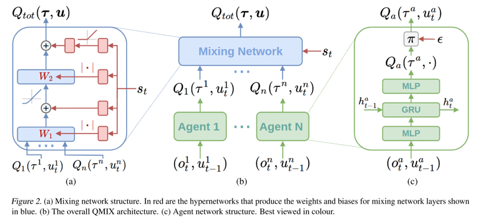

1.1 协作MARL: QMIX
论文及翻译:3 Qatten
Motivation
使用集中式学习分布式执行框架, 本质还是值函数逼近算法;
考虑只通过全局的奖励信息R指导学习
- 只适合协作式的POMDP问题
- 考虑如何通过局部值函数构造联合值函数, 借由全局状态信息提升算法
- 考虑保证联合值函数与局部值函数单调性相同
- VDN QMIX Qatten
如何学习联合Q值函数?
如何从联合Q函数提取好的分布式策略?
基本概念

算法演变
- IQL（independent Q-learning）
- 简单地给每个智能体执行一个Q-learning;
- DRQN：用RNN替换DQN的CNN，解POMDP问题；
- VDN(value decomposition networks)

- 行动策略通过对每个 求argmax得到;
- VDN直接对局部Q函数求和, 没有利用状态信息, 且是线性表示.
QMIX算法

